New update UI
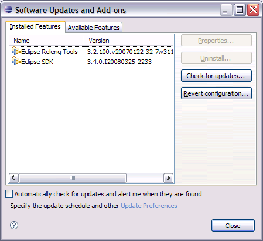
Unlike previous versions, you no longer have to find and select all prerequisites of the software you are trying to install. You can just select the single piece of software you want to install, and all prerequisites will be computed and installed automatically. The Installed Software tab only shows you the exact software items that you chose to install, rather than listing everything that is installed on your system. When you update software, all prerequisites of the software being updated will also be updated as needed.
The new update dialog allows you to add update sites using drag and drop gestures in addition to using the dialogs. To make an update site available in Eclipse, you can drag and drop a site URL link from supported browsers (such as Firefox) into the Help > Software Updates > Available Software page.
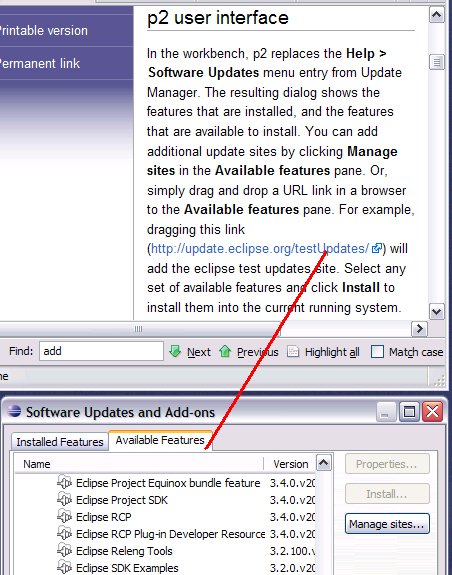
Viewing available software
You can also use the filter box in the dialog to filter the available software by name.
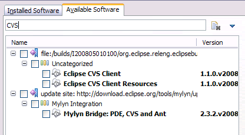
Checkboxes at the bottom allow you to further control what is shown in the view.
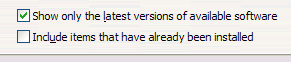
Markers view
A new Markers view has been added for users who prefer to have their problems, bookmarks and tasks in the same view (i.e., as it was back in the days before Eclipse 3.0).
It can be found by selecting Window > Show View > Other > Markers
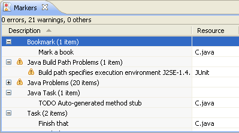
New look for Problems, Bookmarks and Tasks views
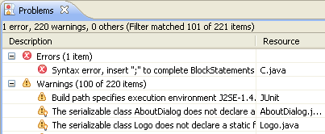
Highlights include:
- Predefined filters for all errors and warnings on selection.
- Union or intersection of problems showing.
- A forms based configuration dialog.
- Use of the commands defined in the workbench rather than custom actions. This means consistency with key bindings and the main window menu.
- Working sets as first class selection sources. For instance, if the Package Explorer view is showing working sets and the Problems view is filtering on selection, you will only see the problems in that working set.
- Show multiple content sets. The Problems view allows you to see all markers, or just the problems.
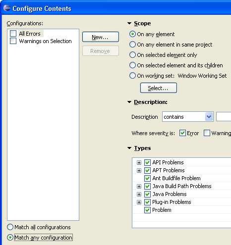
System proxy settings
- Proxy manual settings and automatic configuration on Windows
- Proxy environment variables and Gnome settings on Linux
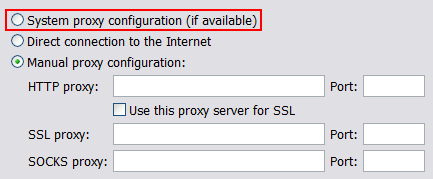
Eclipse for 64-bit Windows
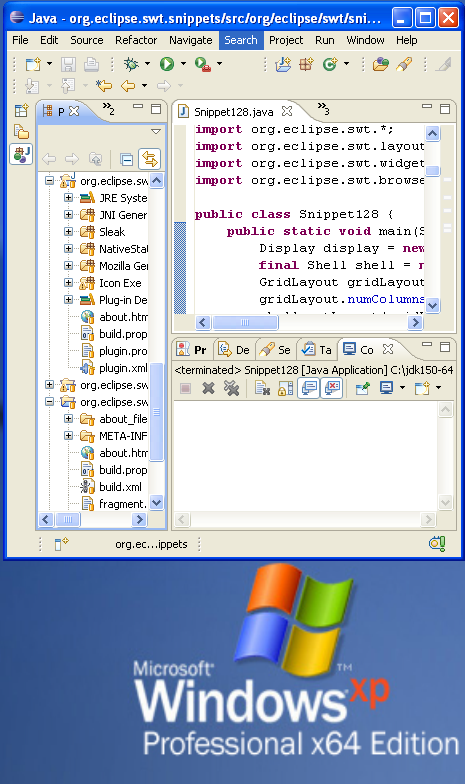
Eclipse on HP-UX IA64
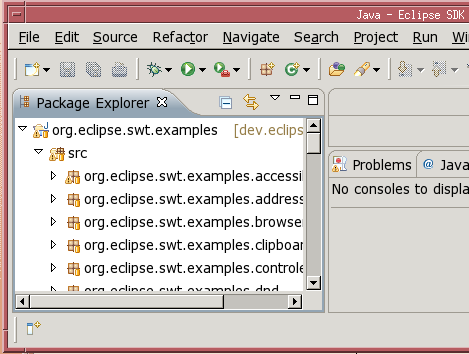
Resource refactorings
The move, delete and rename resource actions now support refactoring in the same manner as the Java refactoring actions do.
These new actions are available in the Project Explorer. Here is an example of the resulting dialog when moving a resource in the Project Explorer:
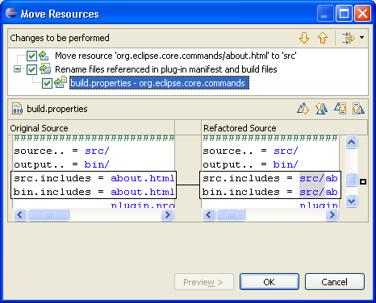
Accessibility for Mac OS X

New dropins folder
Eclipse installer
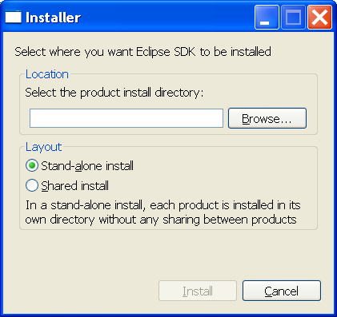
Checking software trust
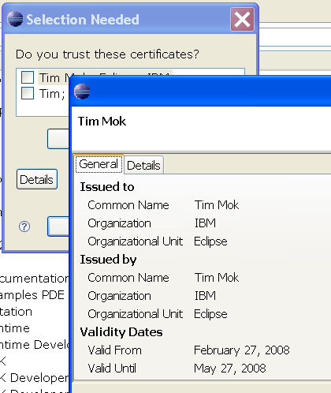
Content type-specific file icons
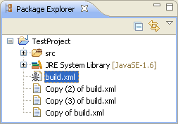
After determining content types in the background, icons will be replaced with more specific ones if available:
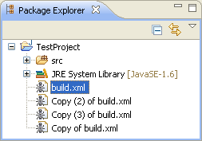
This behavior can be turned off from the General > Appearance > Label Decorations preference page.
Remote Help content enhancements
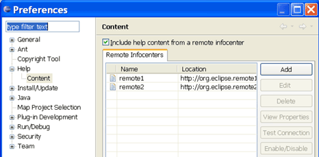
Resize Table and Tree columns using the keyboard
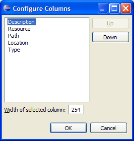
Print button in Help view
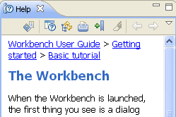
New projects can now be added to working set
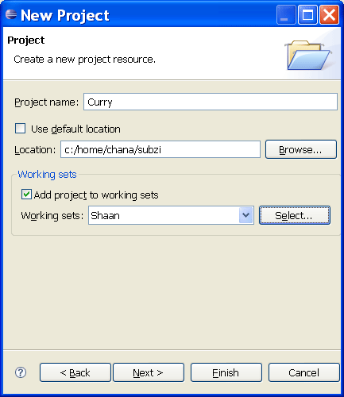
Close tabs with middle click
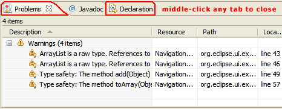
If your mouse doesn't have a middle button, try clicking on the mouse wheel if it has one of those.
Improved text search
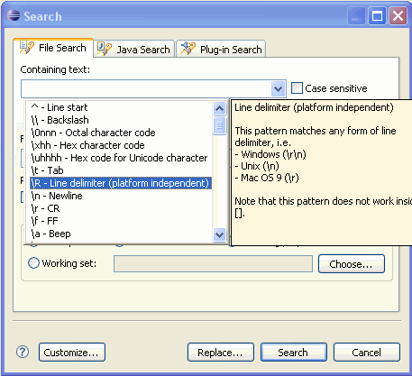
In the Containing text field, the new pattern \R matches any line delimiter (Windows \r\n, Unix \n, and Mac \r). Note that \R cannot be used in character groups ([]), since the Windows delimiter \r\n consists of two characters.
Several new constructs are available when replacing text in files, including:
- \R inserts the document line delimiter (same as Enter key)
- \r and \n insert carriage return and newline characters, respectively. Note that mixing line delimiters inside a document is not recommended and may lead to problems with external editors. \R is usually a better choice.
- \t inserts a Tab
- \xhh and \uhhhh insert the specified character
Content assist and the F1 help tell all the gory details.
Line matches in result view
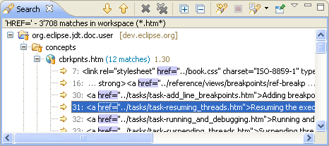
Improved text search replace dialog
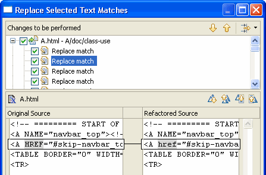
These changes apply to all textual editors in the SDK.
Direct interaction with text hovers
Now, you can just move your mouse into hovers that support this functionality and start scrolling.
The Javadoc hovers in the Java editor now support links to other elements and have a toolbar at the bottom for navigating, moving to the Javadoc view and opening the corresponding declaration:
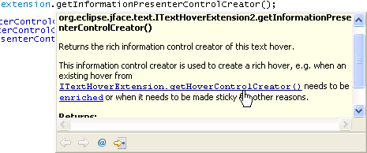
The behavior of hovers when the mouse is moved can be configured on the Text Editors preference page:
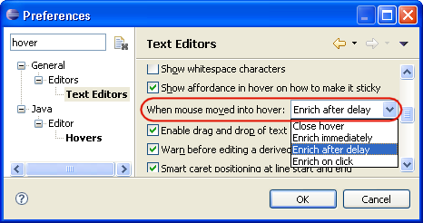
Presenting multiple hyperlinks
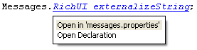
The behavior for hyperlinks can be configured on the General > Editors > Text Editors > Hyperlinking preference page.
Improved regular expressions in Find/Replace dialog
In the Find field, the new pattern \R matches any line delimiter (Windows \r\n, Unix \n, and Mac \r). Note that \R cannot be used in character groups ([]), since the Windows delimiter \r\n consists of two characters.
In the Replace With field, several new constructs have been added, for example:
- \R inserts the document line delimiter (same as Enter key)
- \r and \n insert carriage return and newline characters, respectively. Note that mixing line delimiters inside a document is not recommended and may lead to problems with external editors. \R is usually a better choice.
- \t inserts a tab
- \xhh and \uhhhh insert the specified characters
Content assist and Help tell all the gory details.
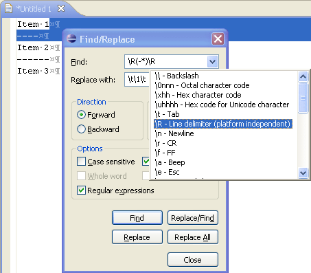Retain case of match when replacing
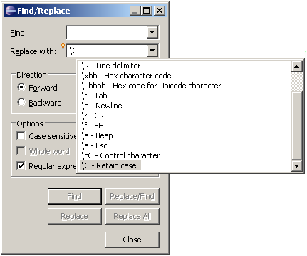
For example, replacing "test" with "\CFoo" in "Test test= TEST" results in "Foo foo= FOO". The same patterns can be used when replacing from the Search view:
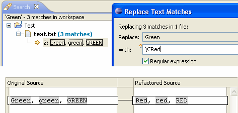
Various printing improvements
- line numbers are now printed if enabled in the editor
- background color is no longer printed
- annotations (e.g. error squiggles) are now printed
- each page shows the file name in the header
- each page shows the current page number in the footer
- the print job gets a meaningful name
Line support in overview ruler
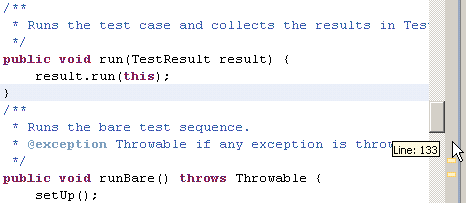
Configure annotation preferences via overview ruler
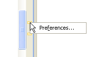
Select text via Shift+Click into line number ruler
New annotation text styles
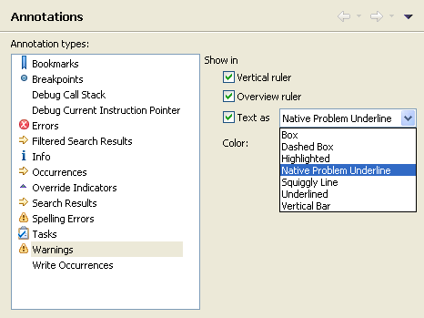
Share multiple projects simultaneously
Correct spelling in CVS Commit wizard
File changes can be viewed in CVS Commit wizard
Ignore resources by path
Apply Patch improvements
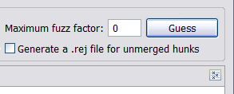
Import Team Project Set improvements
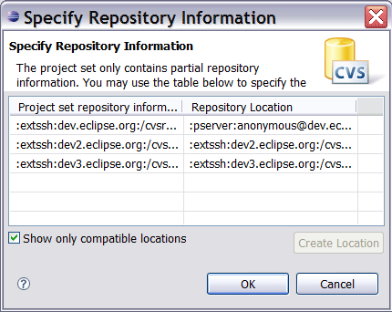
Improved Apply Patch wizard
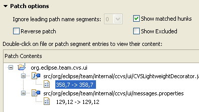
Improved Share Project dialog
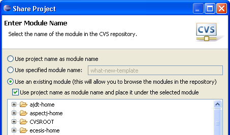
Line counter in Apply Patch wizard
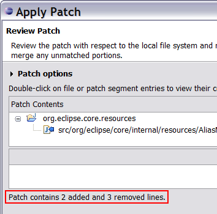
The default mechanism simply sums all lines starting with '+' and '-'. To define custom patterns which can be used to exclude empty lines or comments, go to the General > Compare/Patch preference page.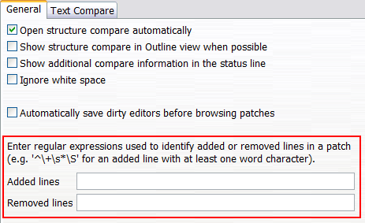
Import/Export launch configurations
You can now import and export launch configurations in the local file system. Select Launch Configurations from the Run/Debug category of the Export wizard. The following page allows you to select configurations to export to a location in the local file system.
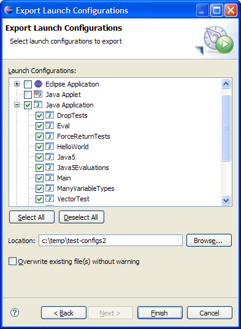
Similarly, you can import launch configurations from a directory in the local file system.
Default console and file encoding
The console encoding used when running or debugging a program automatically
matches the encoding of the program being run or debugged. For example, your
Java program's (or Java project's) encoding will be used by the console and a
corresponding VM argument will be added to the command line (for example, "-Dfile.encoding=UTF-8").
This makes it simpler to run and debug code displaying console output.
Drag and drop watch expressions
You can now drag text into the Expressions view to create expressions and you can reorder entries in the Expressions view with drag and drop.
Remove launch history entries
You can now remove items from the launch history menus. Use Control+Shift+Click to remove an item from a launch history (that is, select the menu item while pressing Control+Shift). The launch will be removed from your history but the configuration is not deleted.
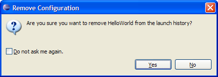